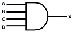

자동차정비기능사 (2012-02-12 기출문제)
1과목: 자동차공학
1. 전자제어 가솔린 분사장치의 연료펌프에서 첵밸브의 역할은?
- 잔압 유지와 재시동을 용이 하게 한다.
- 연료 압력의 맥동을 감소시킨다.
- 연료가 막혔을 때 압력을 조절한다.
- 연료를 분사한다.
(정답률: 75%)

2. 다음 내연기관에 대한 내용으로 맞는 것은?
- 실린더의 이론적 발생마력을 제동마력이라 한다.
- 6실린더 엔진의 크랭크축의 위상각은 90도이다.
- 베어링 스프레드는 피스톤 핀 저널에 베어링을 조립시 밀착되게 끼울 수 있게 한다.
- DOHC 엔진의 밸브 수는 16개이다.
(정답률: 74%)
3. 4사이클 가솔린 엔진에서 최대 압력이 발생되는 시기는 언제인가?
- 배기 행정의 끝 부근에서
- 피스톤의 TDC 전 약 10~15° 부근에서
- 압축 행정 끝 부근에서
- 동력행정에서 TDC 후 약 10~15°에서
(정답률: 64%)
4. 전자제어 엔진의 흡입 공기량 검출에 사용되는 MAP센서 방식에서 진공도가 크면 출력 전압값은 어떻게 변하는가?
- 낮아진다.
- 높아진다.
- 낮아지다가 갑자기 높아진다.
- 높아지다가 갑자기 낮아진다.
(정답률: 58%)
5. 일정한 체적 하에서 연소가 일어나는 대표적인 가솔린 기관의 사이클은?
- 오토사이클
- 디젤사이클
- 사바테사이클
- 고속사이클
(정답률: 83%)
6. 행정이 100㎜이고 회전수가 1500rpm인 4행정 사이클 가솔린 엔진의 피스톤 평균속도는?
- 5m/sec
- 15m/sec
- 20m/sec
- 50m/sec
(정답률: 39%)
7. 일반 디젤기관의 분사펌프에서 최고회전을 제어하며 과속(over run)을 방지하는 기구는?
- 타이머
- 조속기
- 세그먼트
- 피드펌프
(정답률: 83%)
8. 가솔린기관의 노킹을 방지하는 방법으로 틀린 것은?
- 화염 진행거리를 단축시킨다.
- 자연착화 온도가 높은 연료를 사용한다.
- 화염전파 속도를 빠르게 하고 와류를 증가시킨다.
- 냉각수의 온도를 높여 주고 흡기 온도를 높인다.
(정답률: 61%)
9. 디젤기관에서 과급기의 사용 목적으로 틀린 것은?
- 엔진의 출력이 증대된다.
- 체적효율이 작아진다.
- 평균유효압력이 향상된다.
- 회전력이 증가한다.
(정답률: 80%)
10. 2행정 사이클 기관에서 2회의 폭발 행정을 하였다면 크랭크축은 몇 회전 하겠는가?
- 1회전
- 2회전
- 3회전
- 4회전
(정답률: 69%)
11. 소형 승용차 엔진의 실린더 헤드를 대부분 알루미늄 합금으로 만드는 이유로 알맞은 것은?
- 가볍고 열전달이 좋기 때문에
- 녹슬지 않기 때문에
- 주철에 비해 열팽창 계수가 작기 때문에
- 연소실 온도를 높여 체적효율을 낮출 수 있기 때문에
(정답률: 85%)
12. 내연기관 피스톤의 구비조건으로 틀린 것은?
- 가벼울 것
- 열팽창이 적을 것
- 열전도율이 낮을 것
- 높은 온도와 폭발력에 견딜 것
(정답률: 77%)
13. 신품 방열기의 용량이 3.0L 이고, 사용 중인 방열기의 용량이 2.4L 일 때 코어 막힘률은?
- 55%
- 30%
- 25%
- 20%
(정답률: 60%)
14. LPG기관의 연료장치에서 냉각수의 온도가 낮을 때 시동성을 좋게 하기 위해 작동되는 밸브는?
- 기상밸브
- 액상밸브
- 안전밸브
- 과류방지밸브
(정답률: 78%)
15. 실린더 배기량이 376.8cc 이고 연소실 체적이 47.1cc 일 때 기관의 압축비는 얼마인가?
- 7:1
- 8:1
- 9:1
- 10:1
(정답률: 68%)
16. 3원 촉매장치에 대한 설명으로 거리가 먼 것은?
- CO와 HC는 산화되어 CO2와 H20로 된다.
- NOx는 환원되어 N2와 O로 분리된다.
- 유연휘발유를 사용하면 촉매장치가 막힐 수 있다.
- 차량을 밀거나 끌어서 시동하면 농후한 혼합기가 촉매장치 내에서 점화 할 수 있다.
(정답률: 56%)
17. 가솔린연료에서 노크를 일으키기 어려운 성질인 내폭성을 나타내는 수치는?
- 옥탄가
- 점도
- 세탄가
- 베이퍼 록
(정답률: 84%)
18. 전자제어 기관에서 냉각수 온도 감지센서의 반도체 소자로 맞는 것은?
- NTC 저항체
- 제너 다이오드
- 발광다이오드
- 압전소자
(정답률: 65%)
19. 자동차 기관윤활유의 구비조건으로 틀린 것은?
- 온도 변화에 따른 점도변화가 적을 것
- 열과 산에 대하여 안정성이 있을 것
- 발화점 및 인화점이 낮을 것
- 카본 생성이 적으며 강인한 유막을 형성할 것
(정답률: 86%)
20. 전자제어 가솔린분사장치의 특성으로 틀린 것은?
- 배기가스 유해성분이 감소된다.
- 벤투리가 없기 때문에 공기의 흐름 저항이 증가된다.
- 냉각수 온도를 감지하여 냉간시 시동성이 향상된다.
- 엔진의 응답성능이 좋다.
(정답률: 70%)
2과목: 자동차정비 및 안전기준
21. 자동차용 가솔린 연료의 물리적 특성으로 틀린 것은?
- 인화점은 약 –40℃ 이하이다.
- 비중은 약 0.65~0.75정도이다.
- 자연 발화점은 약 250℃로서 경유에 비하여 낮다.
- 발열량은 약 11000kcal/kg로서 경유에 비하여 높다.
(정답률: 59%)
22. 배기가스 재순환 장치(EGR)의 설명으로 틀린 것은?
- 가속성능의 향상을 위해 급가속시에는 차단된다.
- 동력 행정시 연소온도가 낮아지게 된다.
- 질소산화물(NOx)의 량은 현저하게 증가한다.
- 탄화수소와 일산화탄소량은 저감되지 않는다.
(정답률: 82%)
23. 기관 작동 중 냉각수의 온도가 83℃를 나타낼 때 절대 온도는?
- 약 563K
- 약 456K
- 약 356K
- 263K
(정답률: 69%)
24. 전자제어 현가장치(ECS)에서 각 쇽업소버에 장착되어 컨트롤 로드를 회전시켜 오일 통로가 변화되면 Hard나 Soft로 감쇠력 제어를 가능하게 하는 것은?
- ECS 지시 패널
- 액추에이터
- 스위칭 로드
- 차고센서
(정답률: 59%)
25. 물이 고여 있는 도로주행 시 하이드로플레이닝 현상을 방지하기 위한 방법으로 틀린 것은?
- 저속 운전을 한다.
- 트레드 마모가 적은 타이어를 사용한다.
- 타이어 공기압을 낮춘다.
- 리브형 패턴을 사용한다.
(정답률: 68%)
26. 주행 중 제동시 좌우 편제동의 원인으로 틀린 것은?
- 드럼의 편 마모
- 휠 실린더 오일 누설
- 라이닝 접촉불량, 기름부착
- 마스터 실린더의 리턴 구멍 막힘
(정답률: 74%)
27. 기관의 회전속도가 2000rpm, 제2속의 변속비가 2:1, 종감속비가 3:1, 타이어의 유효반지름이 50cm일 때 차량의 속도는?
- 약 62.8km/h
- 약 46.8km/h
- 약 34.8km/h
- 약 17.8km/h
(정답률: 35%)
28. 유압식 브레이크 원리는 어디에 근거를 두고 응용 한 것인가?
- 브레이크액의 높은 비등점
- 브레이크액의 높은 흡습성
- 밀폐된 액체의 일부에 작용하는 압력은 모든 방향에 동일하게 작용한다.
- 브레이크액은 작용하는 압력을 분산시킨다.
(정답률: 67%)
29. 동력전달장치에서 동력전달 각의 변화를 가능하게 하는 이음은?
- 슬립이음
- 스플라인이음
- 플랜지 이음
- 자재이음
(정답률: 72%)
30. 자동차가 선회할 때 차체의 좌우 진동을 억제하고 롤링을 감소시키는 것은?
- 스태빌라이저
- 겹판 스프링
- 타이로드
- 킹핀
(정답률: 80%)
31. 전자제어 동력조향장치의 요구조건이 아닌 것은?
- 저속 시 조향 휠의 조작력이 적을 것
- 고속 직진 시 복원 반력이 감소할 것
- 긴급 조향 시 신속한 조향 반응이 보장될 것
- 직진 안정감과 미세한 조향 감각이 보장될 것
(정답률: 65%)
32. 자동차가 1.5km의 언덕길을 올라가는데 10분, 내려오는데 5분 걸렸다면 평균 속도는?
- 8km/h
- 12km/h
- 16km/h
- 24km/h
(정답률: 57%)
33. 전자제어 제동장치(ABS)의 구성요소가 아닌 것은?
- 휠 스피드 센서
- 전자제어 유닛
- 하이드로릭 컨트롤 유닛
- 각속도 센서
(정답률: 68%)
34. 자동변속기의 변속을 위한 가장 기본적인 정보에 속하지 않는 것은?
- 변속기 오일 온도
- 변속 레버 위치
- 엔진 부하(스로틀 개도)
- 차량 속도
(정답률: 69%)
35. 조향장치에서 많이 사용되는 조향기어의 종류가 아닌 것은?
- 래크-피니언(rack and pinion)형식
- 웜-섹터 롤러(worm and sector roller)형식
- 롤러-베어링(roller and bearing)형식
- 볼-너트(ball and nut)형식
(정답률: 54%)
36. 자동변속기 차량에서 토크 컨버터의 성능을 나타낸 사항이 아닌 것은?
- 속도 비
- 클러치 비
- 전달 효율
- 토크 비
(정답률: 53%)
37. 자동차의 앞바퀴 정령에서 토인 조정은 무엇으로 하는가?
- 드래그 링크의 길이
- 타이로드의 길이
- 시임의 두께
- 와셔의 두께
(정답률: 82%)
38. 제동장치에서 후륜의 잠김으로 인한 스핀을 방지하기 위해 사용되는 것은?
- 릴리프 밸브
- 컷 오프 밸브
- 프로포셔닝 밸브
- 솔레노이드 밸브
(정답률: 54%)
39. 수동변속기 장치에서 클러치 압력판의 역할로 옳은 것은?
- 기관의 동력을 받아 속도를 조절한다.
- 제동거리를 짧게 한다.
- 견인력을 증가시킨다.
- 클러치판을 밀어서 플라이휠에 압착시키는 역할을 한다.
(정답률: 81%)
40. 수동변속기 자동차에서 변속이 어려운 이유 중 틀린 것은?
- 클러치의 끊김 불량
- 컨트롤 케이블의 조정불량
- 기어오일 과다 주입
- 싱크로 메시 기구의 불량
(정답률: 73%)
3과목: 안전관리
41. 축전지의 자기 방전율은 온도가 높아지면 어떻게 되는가?
- 일정하다.
- 높아진다.
- 관계없다.
- 낮아진다.
(정답률: 71%)
42. 다음 중 가속도(G) 센서가 사용되는 전자제어 장치는?
- 에어백(SRS)장치
- 배기장치
- 정속 주행 장치
- 분사장치
(정답률: 72%)
43. 전자제어 에어컨 장치(FATC)에서 컨트롤 유닛(컴퓨터)이 제어하지 않는 것은?
- 히터 밸브
- 송풍기 속도
- 컴프레서 클러치
- 리시버 드라이어
(정답률: 55%)
44. 자동차용으로 주로 사용되는 발전기는?
- 단상 교류
- Y상 직류
- 3상 교류
- 3상 직류
(정답률: 72%)
45. 반도체 소자 중 광센서가 아닌 것은?
- 발광 다이오드
- 포토 트랜지스트
- cds-광전소자
- 노크 센서
(정답률: 80%)
46. 기동전동기의 시동(크랭킹)회로에 대한 내용으로 틀린 것은?
- B 단자까지의 배선은 굵은 것을 사용해야 한다.
- B 단자와 ST 단자를 연결해 주는 것은 점화 스위치(key)이다.
- B 단자와 M 단자를 연결해 주는 것은 마그네트 스위치(key)이다.
- 축전지 접지가 좋지 않더라도 (+) 선의 접촉이 좋으면 작동에는 지장이 없다.
(정답률: 77%)
47. AND 게이트 회로의 입력 A, B, C, D에 각각 입력으로 A=1, B=1, C=1, D=0이 들어갔을 때 출력 X는?

- 0
- 1
- 2
- 3
(정답률: 64%)
48. 전조등 광원의 광도가 20000cd 이며 거리가 20m일 때 조도는?
- 50 Lx
- 100 Lx
- 150 Lx
- 200 Lx
(정답률: 41%)
49. 점화장치에서 파워트랜지스터에 대한 설명으로 틀린 것은?
- 베이스 신호는 ECU에서 받는다.
- 점화코일 1차 전류를 단속한다.
- 이미터 단자는 접지되어 있다.
- 컬렉터 단자는 점화 2차코일과 연결 되어 있다.
(정답률: 51%)
50. 반도체 소자 중 사이리스터(SCR)의 단자에 해당하지 않는 것은?
- 애노드(Anode)
- 게이트(Gate)
- 캐소드(Cathode)
- 컬렉터(Collector)
(정답률: 69%)
51. 리벳이음 작업을 할 때의 유의사항으로 거리가 먼 것은?
- 알맞은 리벳을 사용한다.
- 간극이 있을 때는 두 일감 사이에 여유 공간을 두고 리벳이음을 한다.
- 리벳머리 세트나 일감표면에 손상을 주지 않도록 한다.
- 일감과 리벳을 리벳세트로 서로 긴밀한 접촉이 이루어지도록 한다.
(정답률: 64%)
52. 위험성 정도에 따라 제2종으로 구분되는 유기용제의 색 표시는?
- 빨강
- 파랑
- 노랑
- 초록
(정답률: 65%)
53. 공기압축기의 안전장치 중에서 규정 이상의 압력에 달하면 작동하여 공기를 배출시키는 것은?
- 배수 밸브
- 체크 밸브
- 압력계
- 안전밸브
(정답률: 64%)
54. 전기 기계나 기구의 노출된 충전부에 직접접촉에 의한 감전 방지책이 아닌 것은?
- 충전부가 노출되지 않도록 한다.
- 충전부에 방호망 또는 절연 덮개를 설치한다.
- 발전소, 변전소 및 개폐소에 관계근로자 외 출입을 금지한다.
- 작업장 바닥 절연처리와 절연물 마감처리를 한다.
(정답률: 62%)
55. 지렛대를 사용할 때 유의사항으로 틀린 것은?
- 깨진 부분이나 마디 부분에 결함이 없어야 한다.
- 손잡이가 미끄러지지 않도록 조치를 취한다.
- 화물의 치수나 중량에 적합한 것을 사용한다.
- 파이프를 철제 대신 사용한다.
(정답률: 90%)
56. 자동차 에어컨 가스 냉매용기의 취급사항으로 틀린 것은?
- 냉매 용기는 직사광선이 비치는 곳에 방치 하지 않는다.
- 냉매 용기의 보호 캡을 항상 씌워 둔다.
- 냉매가 피부에 접촉되지 않도록 한다.
- 냉매 충전 시에는 냉매 용기에 완전히 채우도록 한다.
(정답률: 85%)
57. 압축 압력계를 사용하여 실린더의 압축 압력을 점검할 때 안전 및 유의사항으로 틀린 것은?
- 기관을 시동하여 정상온도(워밍업)가 된 후에 시동을 건 상태에서 점검한다.
- 점화계통과 연료계통을 차단시킨 후 크랭킹 상태에서 점검한다.
- 시험기는 밀착하여 누설이 없도록 한다.
- 측정값이 규정값 보다 낮으면 엔진 오일을 약간 주입 후 다시 측정한다.
(정답률: 56%)
58. 자동변속기 전자제어장치 정비 시 안전 및 유의사항으로 옳지 않는 것은?
- 펄스제너레이터 출력전압 파형 측정시 주행 중에 측정한다.
- 컨트롤 케이블을 점검할 때는 브레이크 페달을 밟고, 주차브레이크를 완전히 채우고 점검한다.
- 차량을 리프트에 올려놓고 바퀴 회전시 주위에 떨어져 있어야 한다.
- 부품센서 교환시 점화 스위치 off 상태에서 축전기 접지 케이블을 탈거 한다.
(정답률: 69%)
59. 차량에서 캠버, 캐스터 측정시 유의사항이 아닌 것은?
- 수평인 바닥에서 한다.
- 타이어 공기압을 규정치로 한다.
- 차량의 화물은 적재상태로 한다.
- 새시스프링은 안정 상태로 한다.
(정답률: 84%)
60. 기관의 냉각장치를 점검, 정비할 때 안전 및 유의사항으로 틀린 것은?
- 방열기 코어가 파손되지 않도록 한다.
- 워터 펌프 베어링은 세척하지 않는다.
- 방열기 캡을 열 때는 압력을 서서히 제거하며 연다.
- 누수 여부를 점검할 때 압력시험기의 지침이 멈출 때 까지 압력을 가압한다.
(정답률: 70%)